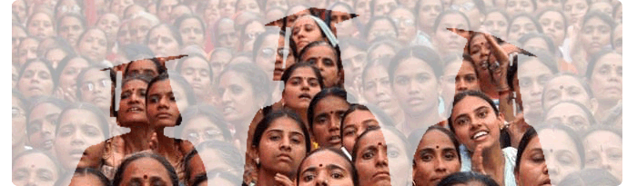

Welcome

Womens are the pillar of our nation and custodians of our culture and civilization.If a nation really wants to enrich and ennoble her society as a whole,women should be given proper education.Dissemination of knowledge and creation of knowledge society in the remote rural corner in the southern most part of Tamil Nadu have been achieved by Sri Parasakthi College for Women,Courtallam.This is a homely call to get more information about this esteemed reputed institution.read more